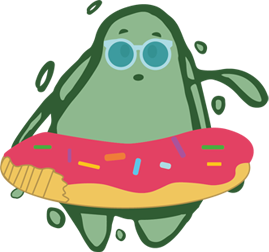

-

¿Sabias que la aparición de cianobacterias es un fenómeno que se produce todos los veranos?
Se reproducen debido a ciclos naturales, como por ejemplo fuertes precipitaciones. Solemos verlas en las playas, pero también habitan lagos, lagunas, aguas residuales, suelos humedos, troncos muertos, cortezas de árboles, en zonas de altas y bajas temperaturas.
¿Conoces como es su reproducción?
Las cianobacterias colonizan numerosos ecosistemas terrestres y acuáticos. Sin embargo, en ambientes acuáticos es donde especialmente se agregan, ocurren en aguas ricas en nutrientes, particularmente fosfatos, nitratos y amoníaco. Se reproducen de manera asexual y vegetativa.